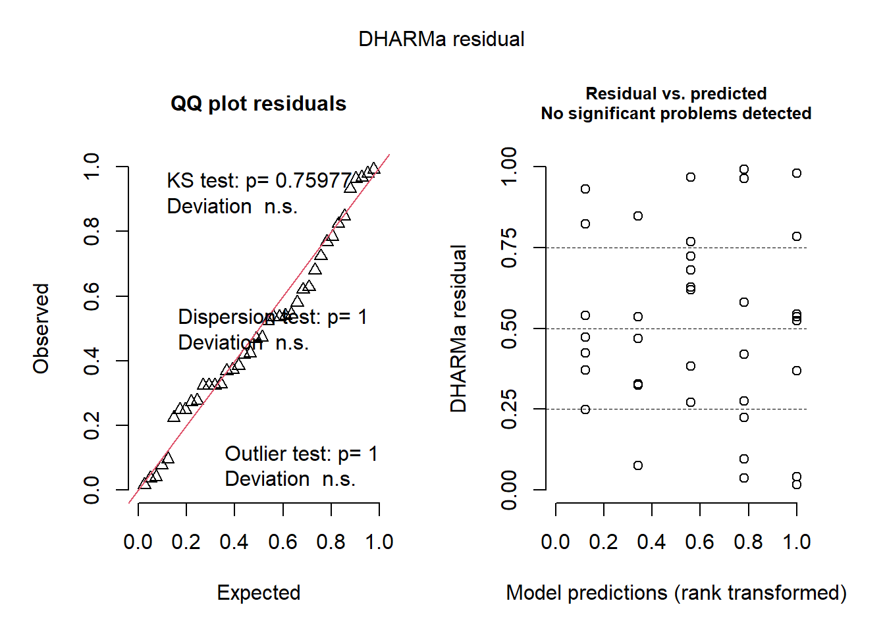
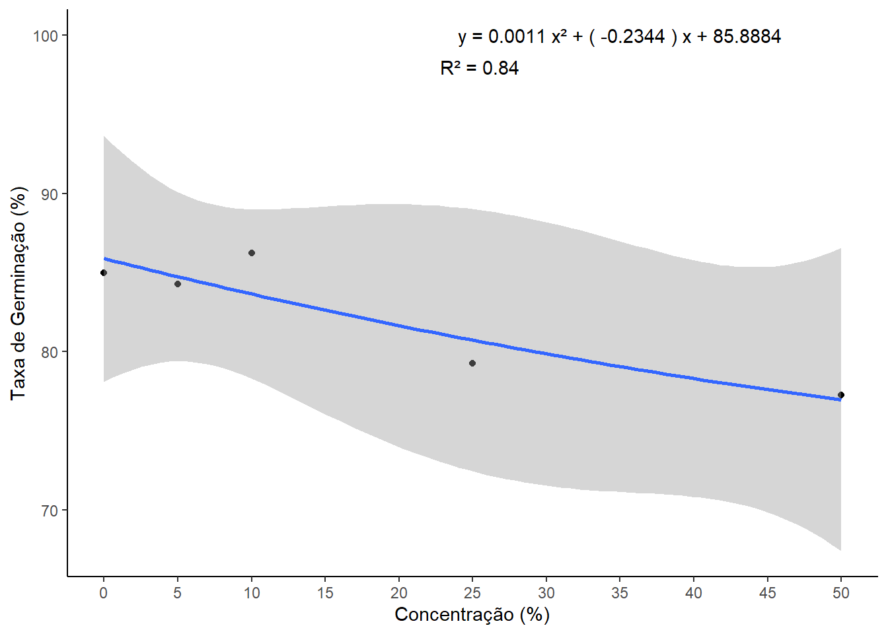
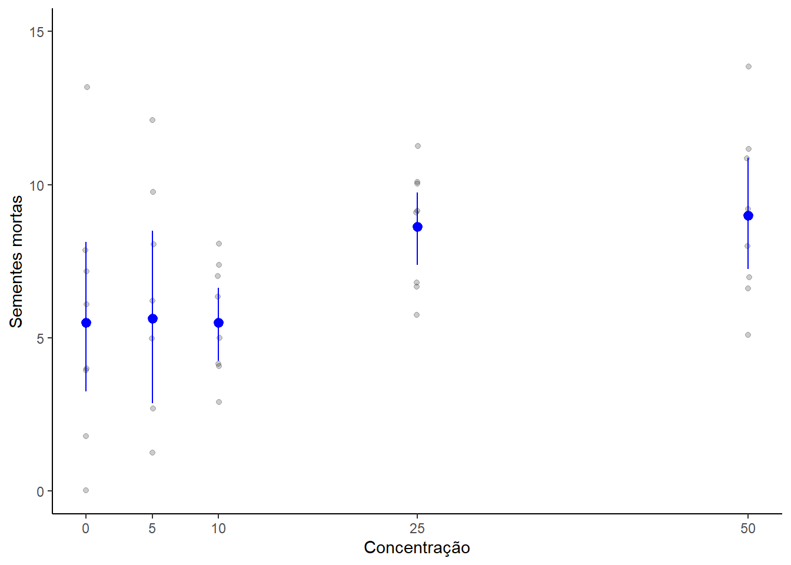
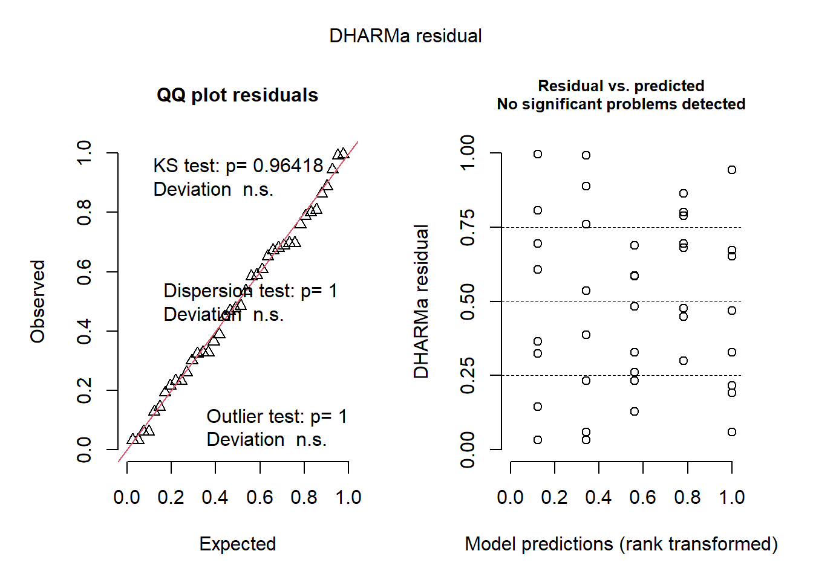
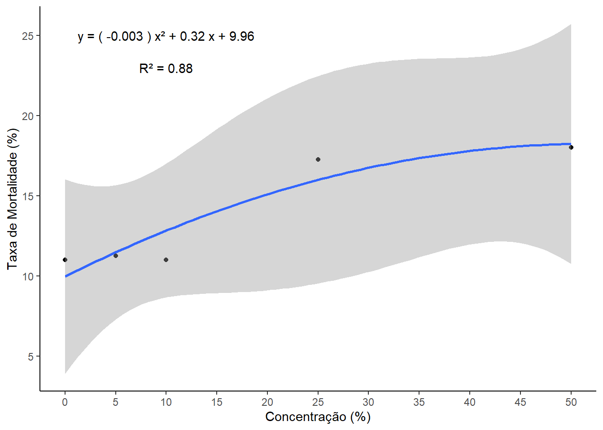
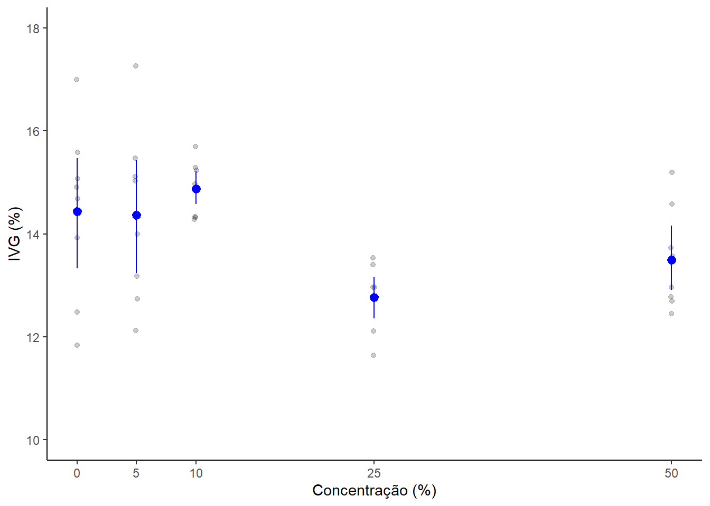
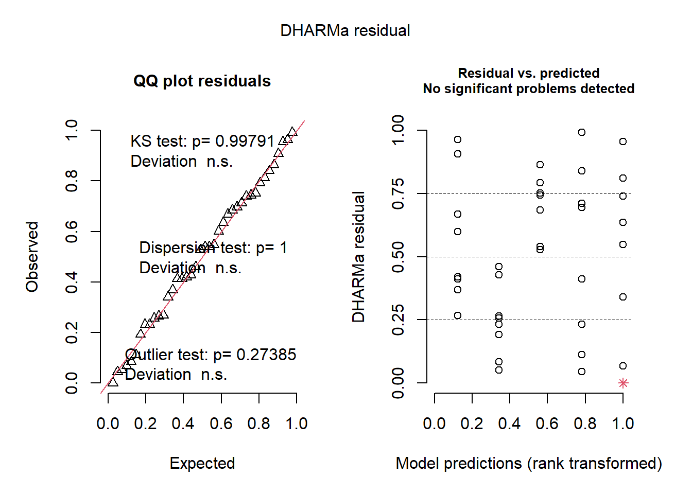
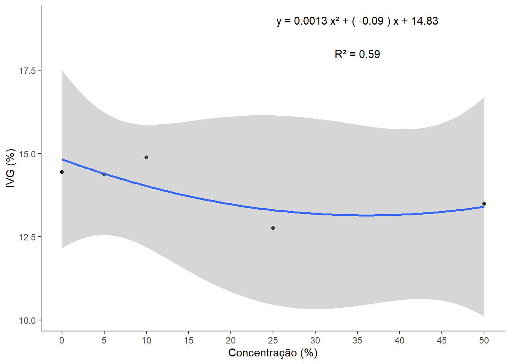
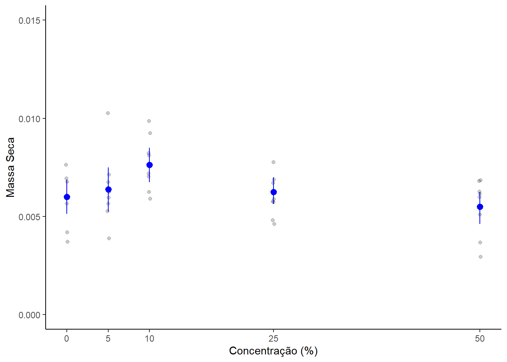
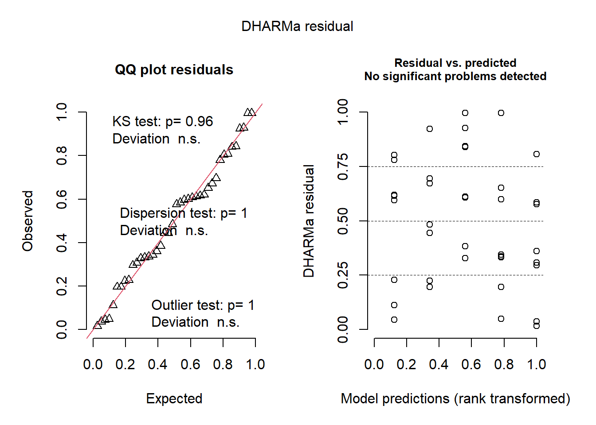

── Conflicts ────────────────────────────────────────── tidyverse_conflicts() ──
✖ dplyr::filter() masks stats::filter()
✖ dplyr::lag() masks stats::lag()
ℹ Use the conflicted package (<http://conflicted.r-lib.org/>) to force all conflicts to become errors
The following object is masked from 'package:dplyr':
select
Attaching package: 'TH.data'
The following object is masked from 'package:MASS':
geyser
cld(m1_medias)
trat emmean SE df lower.CL upper.CL .group
18 41.2 0.521 38 40.1 42.3 1
Confidence level used: 0.95
significance level used: alpha = 0.05
NOTE: If two or more means share the same grouping symbol,
then we cannot show them to be different.
But we also did not show them to be the same.
library(performance)check_normality(m1)
OK: residuals appear as normally distributed (p = 0.287).
check_heteroscedasticity(m1)
OK: Error variance appears to be homoscedastic (p = 0.064).
library(DHARMa)
This is DHARMa 0.4.6. For overview type '?DHARMa'. For recent changes, type news(package = 'DHARMa')
plot(simulateResiduals(m1))
Unable to calculate quantile regression for quantile 0.25. Possibly to few (unique) data points / predictions. Will be ommited in plots and significance calculations.
Unable to calculate quantile regression for quantile 0.5. Possibly to few (unique) data points / predictions. Will be ommited in plots and significance calculations.
Unable to calculate quantile regression for quantile 0.75. Possibly to few (unique) data points / predictions. Will be ommited in plots and significance calculations.

shapiro.test(m1$residuals)
Shapiro-Wilk normality test
data: m1$residuals
W = 0.96694, p-value = 0.2867
bartlett.test(Ngerm~trat,data = dados)
Bartlett test of homogeneity of variances
data: Ngerm by trat
Bartlett's K-squared = 7.9863, df = 4, p-value = 0.09208
Regressão Ngerm
dados2 <- dados %>%group_by(trat) %>%summarise(Ngerm =mean(Ngerm)/50*100)quadratico <-lm(Ngerm ~poly(trat,2, raw = T), data = dados2)b <-summary(quadratico)R2q <-round(b$r.squared,2)B0q <-round(quadratico$coefficients[1],4)B1q <-round(quadratico$coefficients[2],4)B2q <-round(quadratico$coefficients[3],4)equacao2 <-paste(B2q,"x²", "+", "(", B1q, ")","x", "+", B0q)grafico2 <-ggplot(data = dados2,aes(x = trat, y = Ngerm))+geom_point() +geom_smooth(method ="lm", formula = y ~poly(x,2,raw = T)) +theme_classic() +annotate(geom ="text", x =35, y =100, label =paste("y =", equacao2)) +annotate(geom ="text", x =25.5, y =98, label =paste("R² =", R2q)) +scale_x_continuous(breaks =seq(0,50,5))+labs(x ="Concentração (%)", y ="Taxa de Germinação (%)")grafico2

r <-sqrt(R2q)
Visualização Nmort
library(ggplot2)dados_b <- dados |>mutate(trat =as.numeric(trat))g2 <- dados_b |>ggplot(aes(trat, Nmort)) +geom_jitter(width =0.1, alpha =0.2)+stat_summary(fun.data ="mean_cl_boot", size =0.5, color ="blue") +scale_x_continuous(breaks =c(0, 5, 10, 25, 50))+ylim(0,15) +labs(x ="Concentração", y ="Sementes mortas")+theme_classic()g2
Warning: Removed 1 row containing missing values or values outside the scale range
(`geom_point()`).

ANOVA Nmort
m2 <-lm(Nmort~trat,data = dados)summary(m2)
Call:
lm(formula = Nmort ~ trat, data = dados)
Residuals:
Min 1Q Median 3Q Max
-5.7952 -2.2009 -0.3094 1.6576 7.6104
Coefficients:
Estimate Std. Error t value Pr(>|t|)
(Intercept) 5.38957 0.68457 7.873 1.67e-09 ***
trat 0.08113 0.02685 3.022 0.00448 **
---
Signif. codes: 0 '***' 0.001 '**' 0.01 '*' 0.05 '.' 0.1 ' ' 1
Residual standard error: 3.066 on 38 degrees of freedom
Multiple R-squared: 0.1937, Adjusted R-squared: 0.1725
F-statistic: 9.13 on 1 and 38 DF, p-value: 0.004481
anova(m2)
Analysis of Variance Table
Response: Nmort
Df Sum Sq Mean Sq F value Pr(>F)
trat 1 85.84 85.841 9.1305 0.004481 **
Residuals 38 357.26 9.402
---
Signif. codes: 0 '***' 0.001 '**' 0.01 '*' 0.05 '.' 0.1 ' ' 1
OK: residuals appear as normally distributed (p = 0.879).
check_heteroscedasticity(m2)
OK: Error variance appears to be homoscedastic (p = 0.232).
library(DHARMa)plot(simulateResiduals(m2))
Unable to calculate quantile regression for quantile 0.25. Possibly to few (unique) data points / predictions. Will be ommited in plots and significance calculations.
Unable to calculate quantile regression for quantile 0.5. Possibly to few (unique) data points / predictions. Will be ommited in plots and significance calculations.
Unable to calculate quantile regression for quantile 0.75. Possibly to few (unique) data points / predictions. Will be ommited in plots and significance calculations.

shapiro.test(m2$residuals)
Shapiro-Wilk normality test
data: m2$residuals
W = 0.98596, p-value = 0.8924
bartlett.test(Nmort~trat,data = dados)
Bartlett test of homogeneity of variances
data: Nmort by trat
Bartlett's K-squared = 8.6296, df = 4, p-value = 0.07106
Regressão Nmort
dados3 <- dados %>%group_by(trat) %>%summarise(Nmort =mean(Nmort)/50*100)quadratico3 <-lm(Nmort ~poly(trat,2, raw = T), data = dados3)b <-summary(quadratico3)R2q <-round(b$r.squared,2)B0q <-round(quadratico3$coefficients[1],2)B1q <-round(quadratico3$coefficients[2],2)B2q <-round(quadratico3$coefficients[3],4)equacao3 <-paste("(", B2q, ")", "x²", "+", B1q,"x", "+", B0q)grafico3 <-ggplot(data = dados3,aes(x = trat, y = Nmort))+geom_point() +geom_smooth(method ="lm", formula = y ~poly(x,2,raw = T)) +theme_classic() +annotate(geom ="text", x =10, y =25, label =paste("y =", equacao3)) +annotate(geom ="text", x =10, y =23, label =paste("R² =", R2q))+scale_x_continuous(breaks =seq(0,50,5))+labs(x ="Concentração (%)", y ="Taxa de Mortalidade (%)")grafico3

r <-sqrt(R2q)
Visualização IVG
library(ggplot2)dados_c <- dados |>mutate(trat =as.numeric(trat))g3 <- dados_c |>ggplot(aes(trat, IVG)) +geom_jitter(width =0.1, alpha =0.2)+stat_summary(fun.data ="mean_cl_boot", size =0.5, color ="blue") +scale_x_continuous(breaks =c(0, 5, 10, 25, 50))+ylim(10,18) +labs(x ="Concentração (%)", y ="IVG (%)")+theme_classic()g3

m3 <-lm(IVG~trat,data = dados)summary(m3)
Call:
lm(formula = IVG ~ trat, data = dados)
Residuals:
Min 1Q Median 3Q Max
-2.64260 -0.83613 0.09784 0.76558 2.92415
Coefficients:
Estimate Std. Error t value Pr(>|t|)
(Intercept) 14.47872 0.28962 49.991 <2e-16 ***
trat -0.02724 0.01136 -2.398 0.0215 *
---
Signif. codes: 0 '***' 0.001 '**' 0.01 '*' 0.05 '.' 0.1 ' ' 1
Residual standard error: 1.297 on 38 degrees of freedom
Multiple R-squared: 0.1314, Adjusted R-squared: 0.1086
F-statistic: 5.749 on 1 and 38 DF, p-value: 0.02151
anova(m3)
Analysis of Variance Table
Response: IVG
Df Sum Sq Mean Sq F value Pr(>F)
trat 1 9.675 9.6752 5.7495 0.02151 *
Residuals 38 63.947 1.6828
---
Signif. codes: 0 '***' 0.001 '**' 0.01 '*' 0.05 '.' 0.1 ' ' 1
OK: residuals appear as normally distributed (p = 0.942).
check_heteroscedasticity(m3)
OK: Error variance appears to be homoscedastic (p = 0.211).
library(DHARMa)plot(simulateResiduals(m3))
Unable to calculate quantile regression for quantile 0.25. Possibly to few (unique) data points / predictions. Will be ommited in plots and significance calculations.
Unable to calculate quantile regression for quantile 0.5. Possibly to few (unique) data points / predictions. Will be ommited in plots and significance calculations.
Unable to calculate quantile regression for quantile 0.75. Possibly to few (unique) data points / predictions. Will be ommited in plots and significance calculations.

shapiro.test(m3$residuals)
Shapiro-Wilk normality test
data: m3$residuals
W = 0.98822, p-value = 0.9462
bartlett.test(IVG~trat,data = dados)
Bartlett test of homogeneity of variances
data: IVG by trat
Bartlett's K-squared = 13.598, df = 4, p-value = 0.008695
Regressão IVG
dados4 <- dados %>%group_by(trat) %>%summarise(IVG =mean(IVG))quadratico4 <-lm(IVG ~poly(trat,2, raw = T), data = dados4)b <-summary(quadratico4)R2q <-round(b$r.squared,2)B0q <-round(quadratico4$coefficients[1],2)B1q <-round(quadratico4$coefficients[2],2)B2q <-round(quadratico4$coefficients[3],4)equacao4 <-paste(B2q,"x²", "+", "(", B1q, ")","x", "+", B0q)grafico4 <-ggplot(data = dados4,aes(x = trat, y = IVG))+geom_point()+geom_smooth(method ="lm", formula = y ~poly(x,2,raw = T)) +theme_classic() +annotate(geom ="text", x =35, y =19, label =paste("y =", equacao4)) +annotate(geom ="text", x =35, y =18, label =paste("R² =", R2q))+scale_x_continuous(breaks =seq(0,50,5))+labs(x ="Concentração (%)", y ="IVG (%)")grafico4

r <-sqrt(R2q)
Visualização MS
library(ggplot2)dados_d <- dados |>mutate(trat =as.numeric(trat))g4 <- dados_d |>ggplot(aes(trat,MS )) +geom_jitter(width =0.1, alpha =0.2)+stat_summary(fun.data ="mean_cl_boot", size =0.5, color ="blue")+scale_x_continuous(breaks =c(0, 5, 10, 25, 50))+ylim(0,0.015) +labs(x ="Concentração (%)", y ="Massa Seca")+theme_classic()g4

ANOVA MS
m4 <-lm(MS~trat,data = dados)summary(m4)
Call:
lm(formula = MS ~ trat, data = dados)
Residuals:
Min 1Q Median 3Q Max
-0.0027193 -0.0007048 0.0000343 0.0007880 0.0034923
Coefficients:
Estimate Std. Error t value Pr(>|t|)
(Intercept) 6.705e-03 3.359e-04 19.958 <2e-16 ***
trat -1.971e-05 1.318e-05 -1.496 0.143
---
Signif. codes: 0 '***' 0.001 '**' 0.01 '*' 0.05 '.' 0.1 ' ' 1
Residual standard error: 0.001505 on 38 degrees of freedom
Multiple R-squared: 0.0556, Adjusted R-squared: 0.03075
F-statistic: 2.237 on 1 and 38 DF, p-value: 0.143
anova(m4)
Analysis of Variance Table
Response: MS
Df Sum Sq Mean Sq F value Pr(>F)
trat 1 5.0650e-06 5.0651e-06 2.2372 0.143
Residuals 38 8.6035e-05 2.2641e-06
OK: residuals appear as normally distributed (p = 0.284).
check_heteroscedasticity(m4)
OK: Error variance appears to be homoscedastic (p = 0.401).
library(DHARMa)plot(simulateResiduals(m4))
Unable to calculate quantile regression for quantile 0.25. Possibly to few (unique) data points / predictions. Will be ommited in plots and significance calculations.
Unable to calculate quantile regression for quantile 0.5. Possibly to few (unique) data points / predictions. Will be ommited in plots and significance calculations.
Unable to calculate quantile regression for quantile 0.75. Possibly to few (unique) data points / predictions. Will be ommited in plots and significance calculations.

shapiro.test(m4$residuals)
Shapiro-Wilk normality test
data: m4$residuals
W = 0.965, p-value = 0.2473
bartlett.test(MS~trat,data = dados)
Bartlett test of homogeneity of variances
data: MS by trat
Bartlett's K-squared = 1.8232, df = 4, p-value = 0.7682
Regressão MS
dados5 <- dados %>%group_by(trat) %>%summarise(MS =mean(MS))quadratico5 <-lm(MS ~poly(trat,2, raw = T), data = dados5)b <-summary(quadratico5)R2q <-round(b$r.squared,2)B0q <-round(quadratico5$coefficients[1],4)B1q <-round(quadratico5$coefficients[2],4)B2q <-round(quadratico5$coefficients[3],6)equacao5 <-paste("(", B2q, ")", "x²", "+", B1q,"x", "+", B0q)grafico5 <-ggplot(data = dados5,aes(x = trat, y = MS))+geom_point()+geom_smooth(method ="lm", formula = y ~poly(x,2,raw = T)) +theme_classic() +annotate(geom ="text", x =35, y =0.01, label =paste("y =", equacao5)) +annotate(geom ="text", x =35, y =0.0095, label =paste("R² =", R2q))+scale_x_continuous(breaks =seq(0,50,5))+labs(x ="Concentração (%)", y ="Massa Seca (g)")grafico5